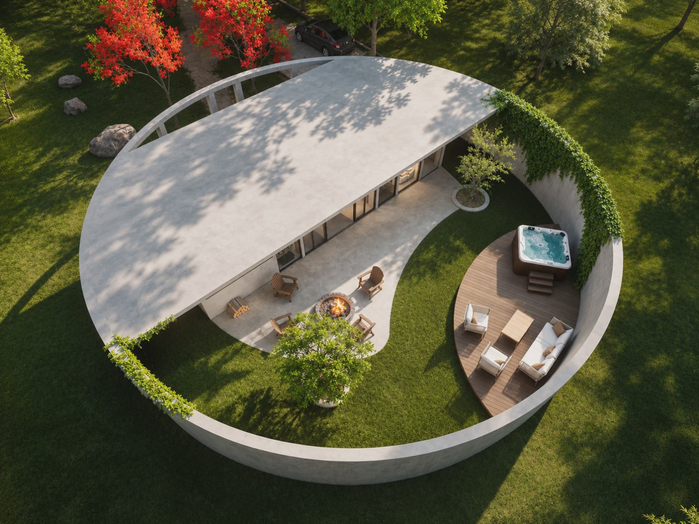
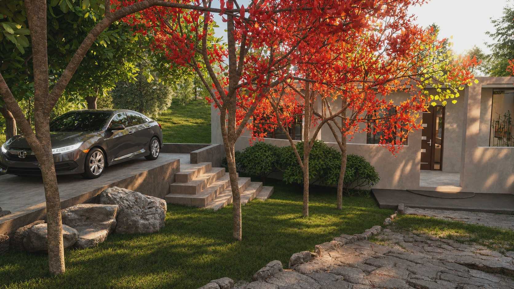
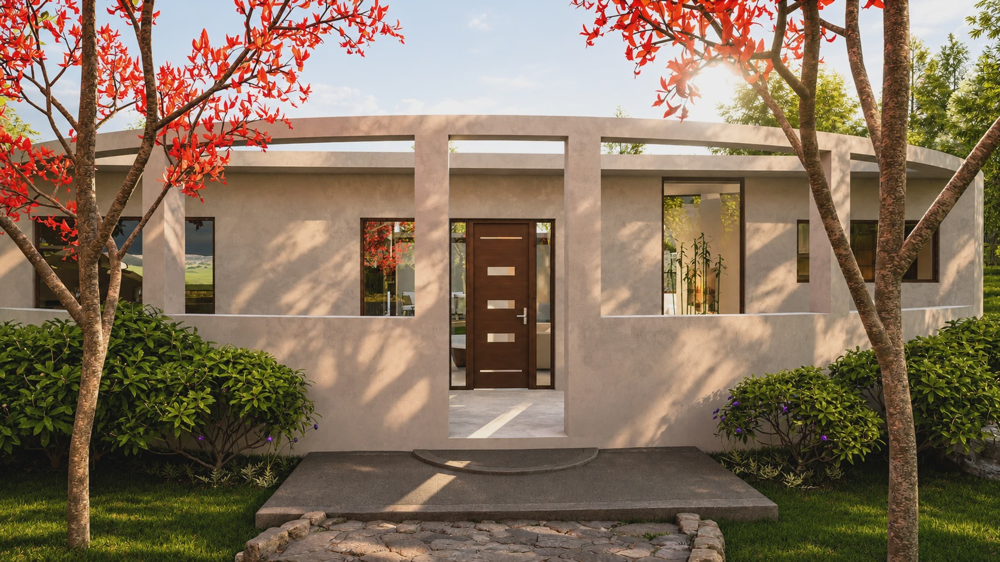
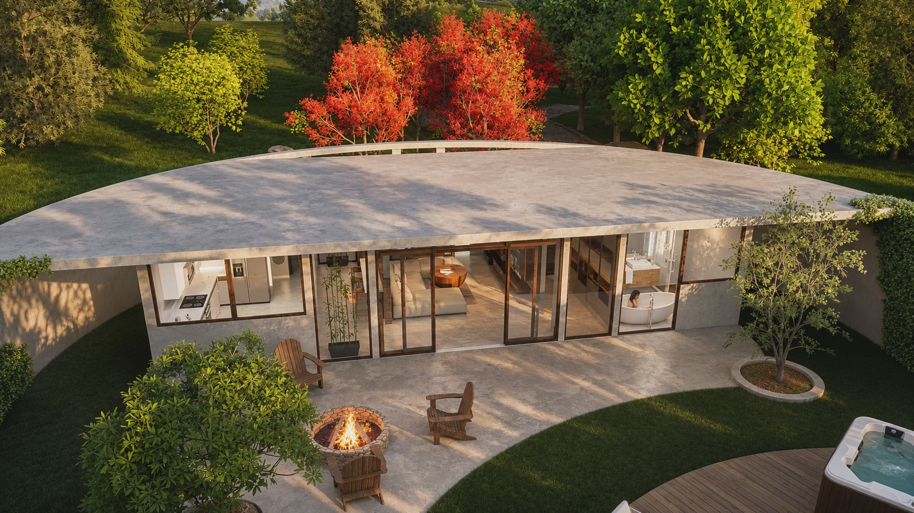
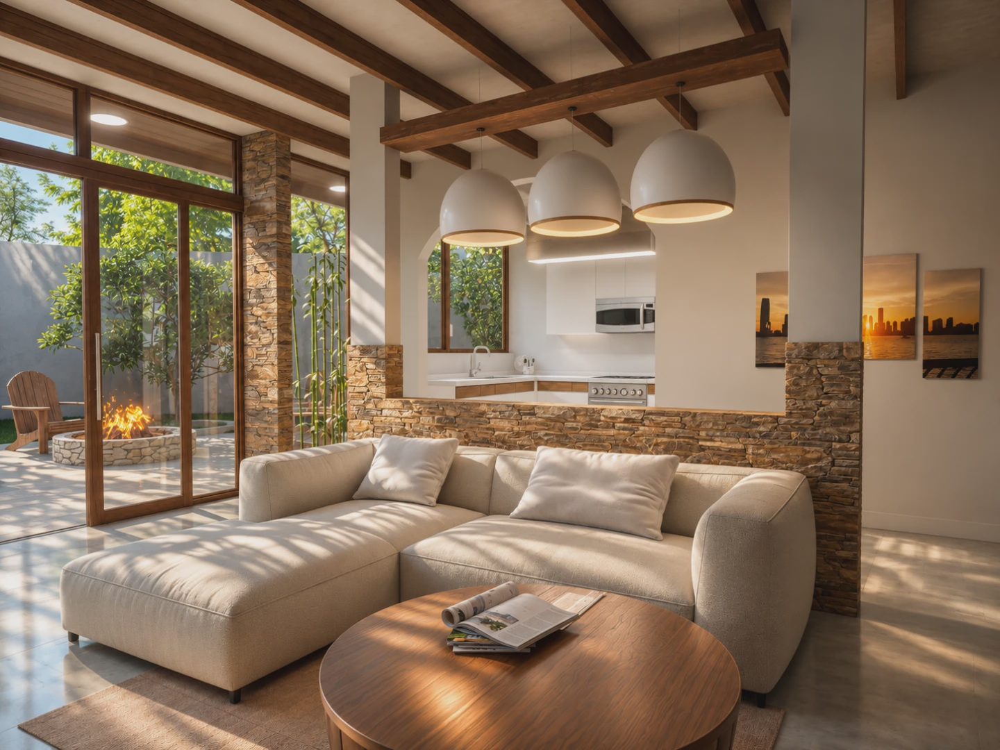
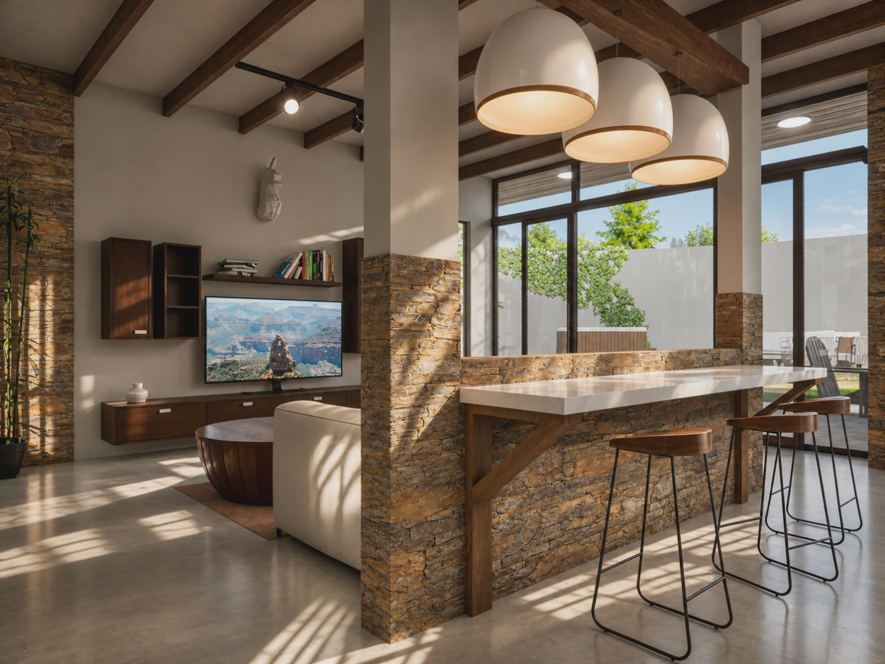
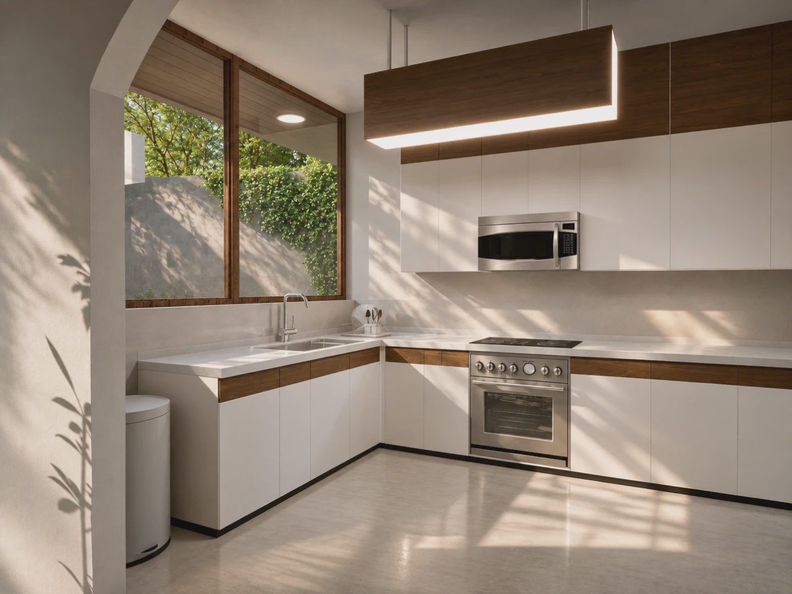
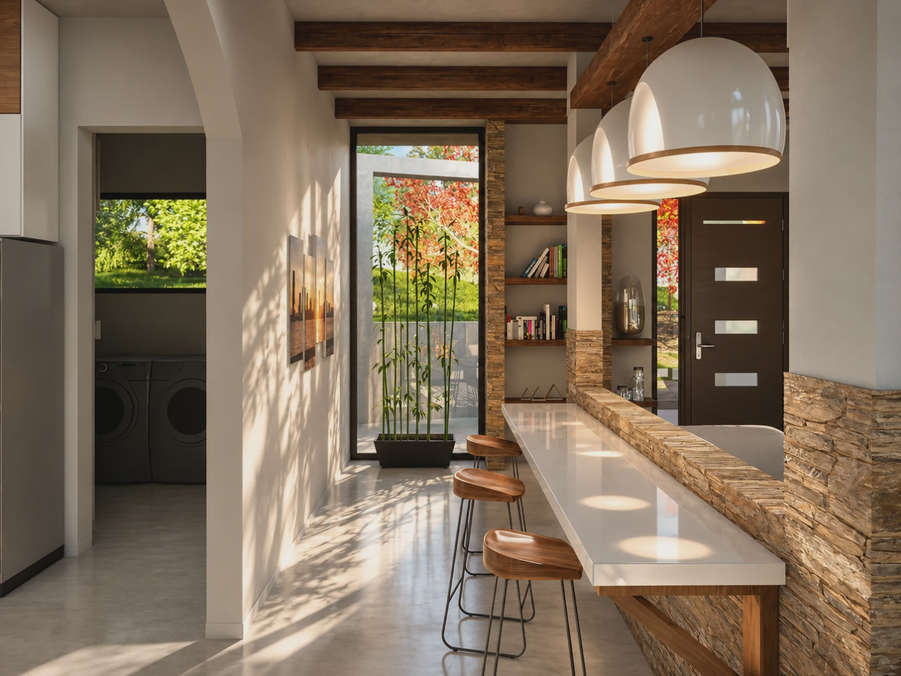
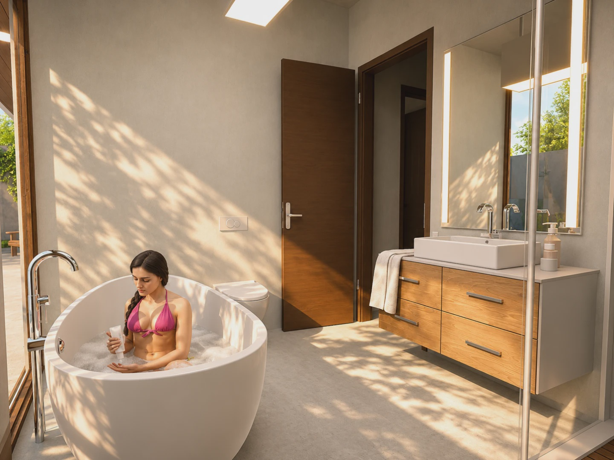
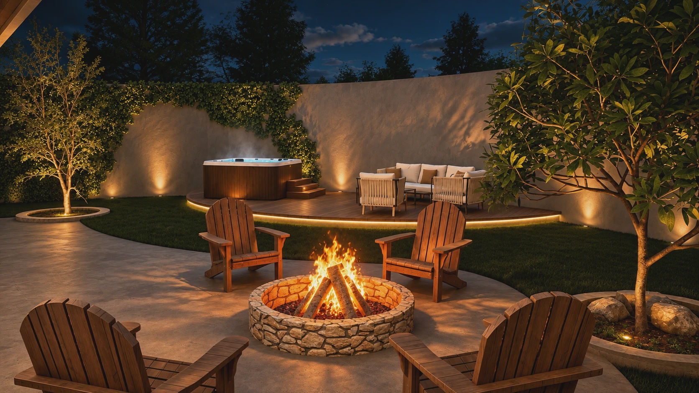

Architectural Concept
Experimental CircularHome.
A residence organized around a private circular garden, with a sweeping roof, fire-pit terrace and secluded spa deck.
An inward-facing retreat.
The circular enclosure provides privacy while connecting the house to its own garden. A sweeping roof shelters the interior rooms and frames the shared outdoor space.
The design is presented through aerial, exterior, residential interior and evening visualizations.
The Circular Form
A broad curved roof and perimeter wall frame a sheltered courtyard. Aerial views reveal how the residence, central garden and outdoor areas fit together.


Arrival & Entrance
The approach links the parking area to the house through planted paths, natural stone and a stepped entrance.



Outdoor Living
The landscaped courtyard brings together a fire-pit terrace and a raised timber deck with spa and lounge seating.


Living Spaces
Full-height glazing opens the communal areas toward the garden. Timber ceiling beams, textured stone and warm neutral furnishings define the interiors.







Kitchen & Dining
An open kitchen and breakfast counter connect visually to the living areas and the courtyard.



Bedroom & Bathroom
Bedroom and bathroom perspectives show the quiet material palette and access to daylight and garden views.



After Dark
As daylight fades, interior illumination and the fire pit define the courtyard and its connection to the house.


CRIO CREATIVES / PROJECT PRESENTATION
Architecture shaped around a garden.
Experimental Circular Home · Architectural concept visualization